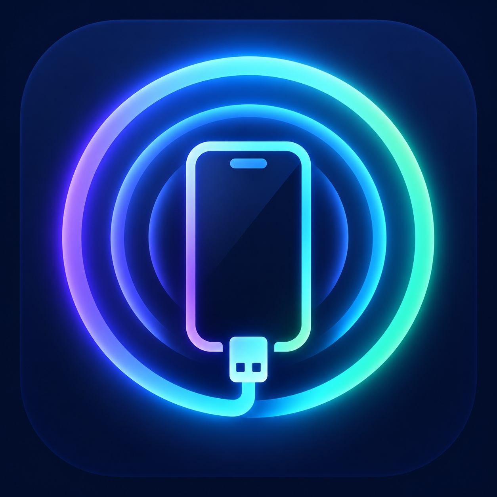

IOSTouch Repo
Nguồn Sileo/Zebra chính thức cho agent kết nối IOSTouch qua USB.
https://huucong205-spec.github.io/iostouch/
Thêm vào Sileo
Yêu cầu iOS 14+, thiết bị jailbreak và ElleKit hoặc MobileSubstrate. Agent sử dụng mã nguồn ioscpy theo giấy phép MIT.